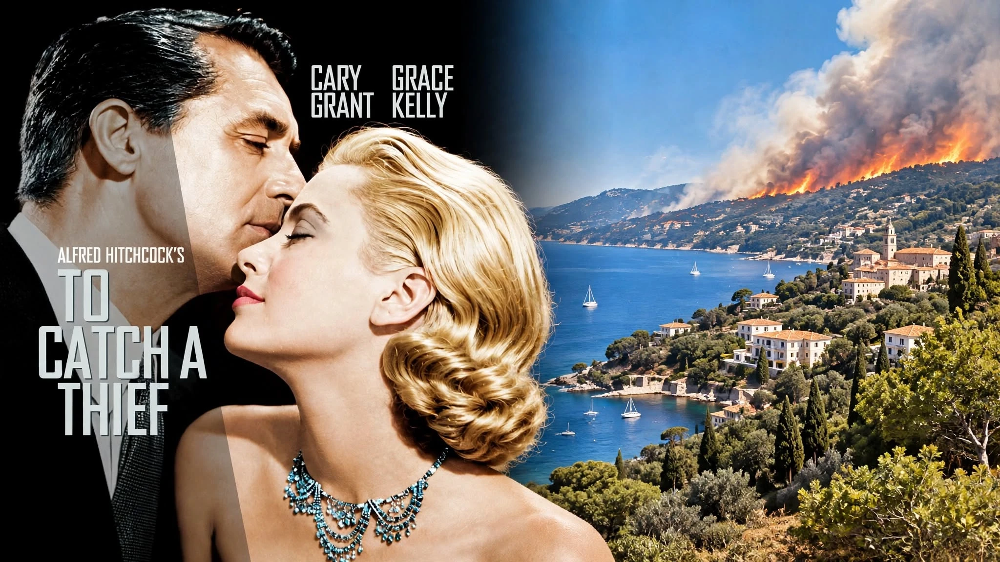
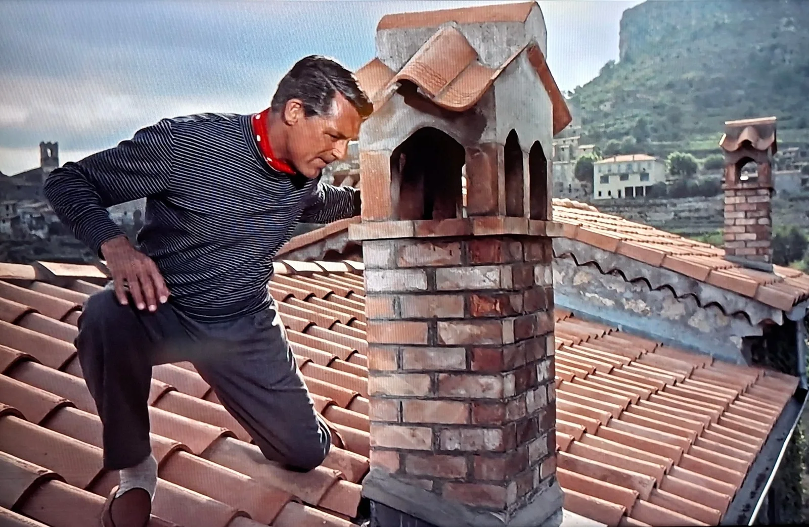
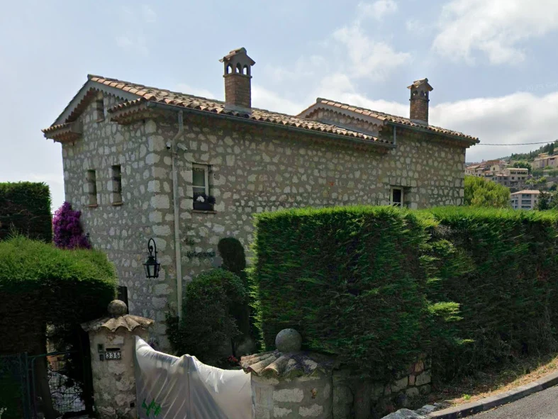
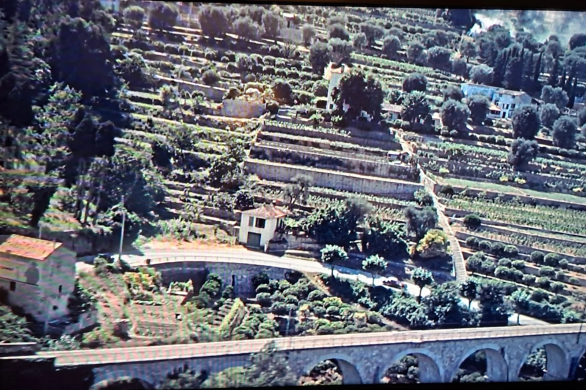
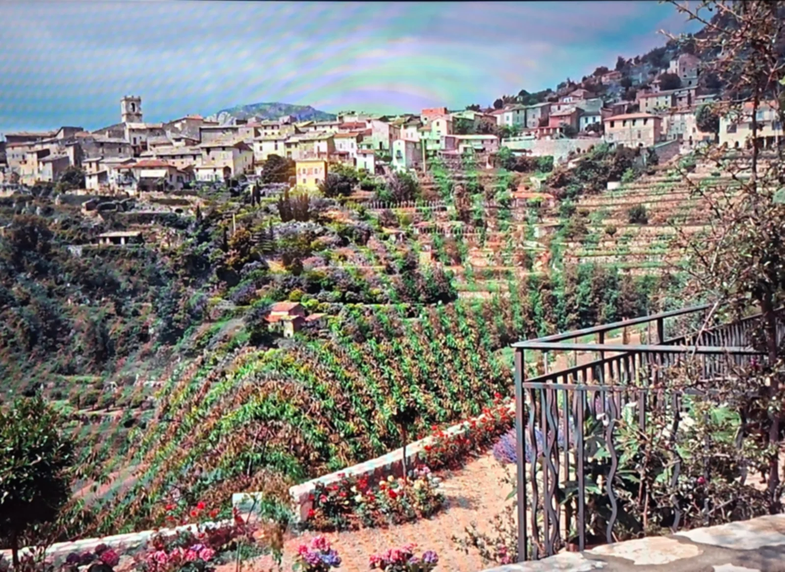

Seventy years after To Catch a Thief, the hills around John Robie's villa tell a wildfire story: more natural vegetation, abandoned terraces and houses scattered across the slopes.
A thriller, a villa and a hillside
In 1955 Alfred Hitchcock released To Catch a Thief, with Cary Grant as John Robie, a retired cat burglar, and Grace Kelly, who a year later would become Princess of Monaco on the same stretch of coast. The film is remembered for its glamour, its jewels and its drives along the Riviera.
Watching it again recently, I found myself looking at something else: the countryside behind the actors.
Principal photography started on 31 May 1954 at John Robie's villa, a real house at 335 Route de Saint-Jeannet, in the hills north-west of Nice, just below the limestone cliff of the Baou de Saint-Jeannet. The villa is still there today. The landscape around it is not.


1950s versus today
In the film's aerial shots, the slopes are stepped with stone terraces: vines, olives, vegetables and flower crops, with tracks and walls dividing them. Trees stand in rows or alone. Houses are few, and most of the population lives in compact perched villages.

Comparing historical aerial photography of the area around the villa with today's imagery shows how much has changed in seventy years.
Three changes, all in the same direction
From a wildfire-risk point of view, three things have changed at the same time, and each one makes the next one worse.
1. More and denser natural vegetation. Across France, forest area has roughly doubled since its low point in the 1830s and now covers about 31% of the country. The Alpes-Maritimes is among the most heavily wooded departments in France, with close to 60% of its surface covered. Where there were once open, grazed or cultivated slopes, there is now continuous vegetation, from ground fuels to tree crowns.
2. Abandoned cultivation. The terraces in the film were maintained, irrigated, pruned and harvested every year. They worked as a mosaic of low-fuel strips that slowed a fire down and gave people room to fight it. More than 1.5 million hectares of formerly managed land are estimated to have been abandoned across Mediterranean countries. Research in Italy has linked forest expansion and shrub encroachment on abandoned land to a higher incidence of large and recurrent fires.
3. Scattered houses outside the traditional villages. The old perched villages of the Riviera were built like fortresses: stone houses packed tightly together, surrounded by cultivated land. Saint-Jeannet itself appears in the film exactly like that, a compact mass of stone above terraces of vines and crops.

A fire approaching such a village met a compact mineral mass with a cultivated perimeter. Today, individual villas are spread across the hillsides, each one sitting inside its own garden, hedges and pine trees. Every house is a separate point to defend, and the firefighting resources are spread over a much wider area. More people living in the vegetation also means more potential ignition sources.
On their own, each of these changes raises the risk. Together, they multiply it: more fuel, fewer natural breaks, and more property and lives exposed within the vegetation. It is no coincidence that the Alpes-Maritimes accounts for about one in five of the French municipalities that operate under a wildfire risk prevention plan (PPRIF).
Vegetation is not the shortage
After every major fire season, the public response is understandable and well-intentioned: plant trees, and ask the state for reforestation.
The Riviera story points in a different direction. In much of the Mediterranean, natural vegetation is not in short supply; it has been growing for decades. The real need is a landscape that is managed: a mosaic of cultivated land, grazing, fuel breaks and maintained vegetation around settlements, and planning that keeps new houses close to existing ones rather than scattered across the hills.
Planting has its place. It works best as part of a landscape plan that considers what will burn, where, and what stands in the way.
Reading the landscape as an incident
In industry, every incident is analysed to understand how the conditions for it built up over time, and those findings feed the next risk assessment. Wildfires deserve the same approach.
Comparing historical and current imagery is one of the tools we use at FlEvo, through the PYRODOTUS platform, to understand how a landscape has become more vulnerable and to assess the exposure of properties, communities and insured assets before the next fire, not after it.
Sometimes the evidence is in a classic film.
Sources
- Hitchcock Zone: Saint-Jeannet chronology
- IMDb: To Catch a Thief (1955), filming locations
- Office français de la biodiversité: How are France's forests faring?
- Observatoire de la forêt méditerranéenne: forest cover in Provence-Alpes-Côte d'Azur (2019)
- Ascoli et al. (2021): land use change and wildfire incidence in Italy
- Forests 15(12):2258 (2024): land abandonment and shrub encroachment
- SDES: key figures on forest and vegetation fires
- Aerial imagery: IGN, Remonter le temps · Film stills: To Catch a Thief (1955) © Paramount Pictures